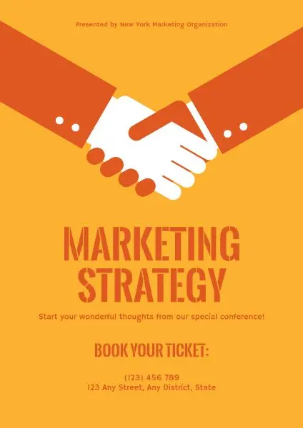

Randy Yang
Before you enter your sophomore year, I highly urge you to become more ambitious with yourself! Do not be afraid to try new things and branch yourself out, both socially and academically. There are so many clubs that you should look into involving yourself within the professional, social, and cultural realm. Some recommendations that I have for you could be the undergraduate business society, VSA, and CSA. There are so many clubs out there at UCR, and all it takes is setting aside a bit of time to do some research to find one that interests you enough to continue pursuing it! There truly are clubs for everything from kendo, judo, dancing, and even cooking! During your freshman year, you really only got involved with one organization, and kind of felt content with that, but it is important to remember to never be complacent and to always aspire for more.
Although academically, you did not do as well as you hoped in your first year, there is always an opportunity to use this as motivation to do even better your second year. Do not let the results of your first year dictate how your second year will play out! In order to reach your academic goals, you will need to try even harder than you did in your first year. This may prove to be a difficult task considering that you will also be looking into different clubs and organizations, which will inevitably deplete the time that you have to spare, but do not let this discourage you as I know that you will be able to pull through in the end! It is also important to not compare yourself academically to those around you, as oftentimes this can get to your head and dictate your self worth, when the reality of the situation is that everyone works at their own pace and eventually, grades become an afterthought once work experience is achieved.
Another thing that you should aim for is to get a job! Money has been super tight all through out freshman year, and it has been a really big struggle for you overall. Having to skip out on hanging out with friends or going on fun trips because of financial reasons has been a super big bummer through out freshman year, but hopefully this can change. It would be preferable if you were to not work in any food industry jobs as you have already been traumatized enough by them in the past, however, a barista or boba shop job seems fun!
Experience
UBA Marketing
• Collaborated with manager
• Worked around peak hours
• Helped Promote
• Created Fliers
Education
UC Riverside
University of California Riverside
University of California Riverside
Portfolio


© John Doe